Ratan N Tata
- 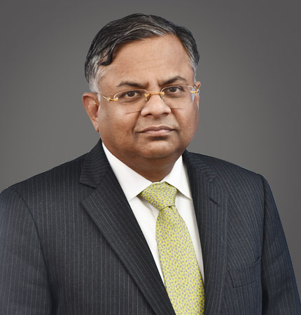 Mr Natarajan Chandrasekaran Chairman, Non-Executive
- 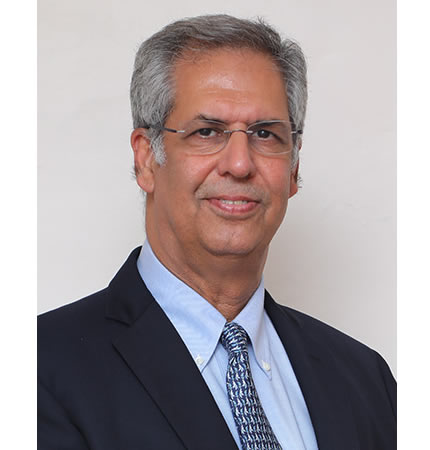 Mr Noel Naval Tata Vice-Chairman, Non-Executive
- Mr O P Bhatt Independent Director
- 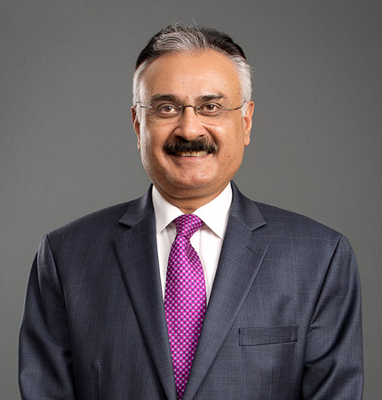 Mr Deepak Kapoor Independent Director
-
 Mrs Farida Khambata
Independent Director
Mrs Farida Khambata
Independent Director
- 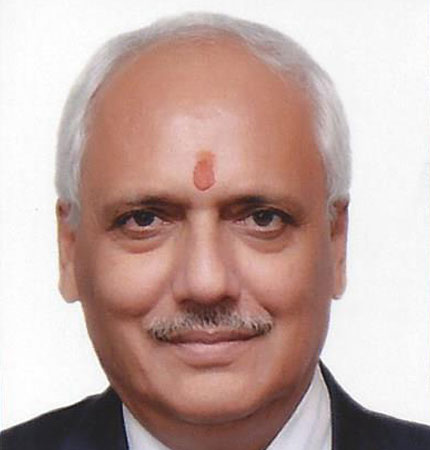 Mr V K Sharma Independent Director
- 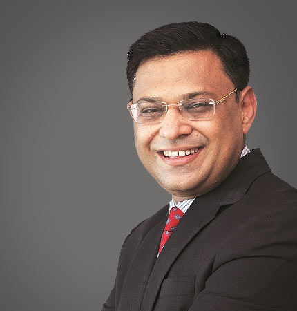 Mr Saurabh Agrawal Non-Executive Director
- 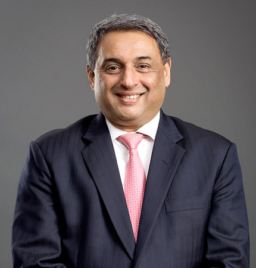 Mr T V Narendran CEO & Managing Director
- 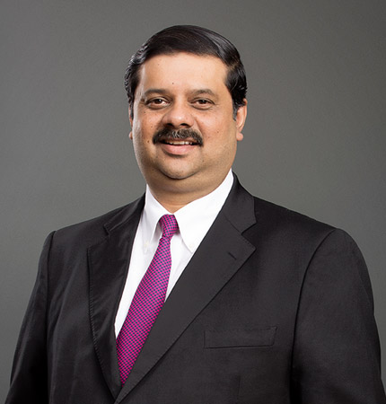 Mr Koushik Chatterjee Executive Director and Chief Financial Officer
The primary objective of the Audit Committee is to monitor and provide effective supervision of the Management’s financial reporting process, to ensure accurate and timely disclosures, with the highest levels of transparency, integrity and quality of financial reporting. The Committee oversees the work carried out by, the internal auditor, the statutory auditor and the cost auditor and notes the processes and safeguards employed by each of them.
The Board of Directors of the Company adopted the Charter on March 31, 2015, which was subsequently revised on February 4, 2016 and further revised on March 28, 2019. The Company Secretary acts as the Secretary of the Committee. The internal auditor reports functionally to the Audit Committee.
The Committee is comprised of:
- Mr. Deepak Kapoor, Chairman
- Mr. O. P. Bhatt
- Ms. Farida Khambata
- Mr. Saurabh Agrawal
The purpose of the Nomination and Remuneration Committee (NRC) is to oversee the Company’s nomination process for senior management; specifically to identify, screen and review individuals qualified to serve as Executive Directors (EDs), Non-Executive Directors (NEDs) and Independent Directors consistent with criteria approved by the Board. It also recommends, for approval by the Board, nominees for election at the Annual General Meeting of the shareholders.
The Board has adopted the NRC Charter for the functioning of the Committee on May 20, 2015 which was revised on March 29, 2019 basis the amendments in Listing Regulations.
The Committee has the overall responsibility of approving and evaluating the compensation plans, policies and programmes for the EDs and senior management. The Committee reviews and recommends to the Board matters concerning the base salary incentives, other benefits, compensation or arrangements and executive employment agreements for the EDs for its approval. The Committee further coordinates and oversees the annual self-evaluation of the performance of the Board, Committees and of individual Directors.
The committee is comprised of:
- Mr. O. P. Bhatt, Chairman
- Mr. N. Chandrasekaran
- Mr. V. K. Sharma
The purpose of our Corporate Social Responsibility (CSR) Committee is to govern and review the CSR responsibilities of the company from time to time. The CSR Committee recommends the Annual Business Plan for CSR to the Board for its approval. The plan includes resource requirements and allocation across interventions and locations.
The Board has approved a Charter for the functioning of the Committee, on March 31, 2015. The CSR policy is available in the Policies section.
The Committee is comprised of:
- Mr. Deepak Kapoor, Chairman
- Mr. O. P. Bhatt
- Mr. T. V. Narendran
- Mr. Koushik Chatterjee
We have constituted a Risk Management Committee (RMC) for framing, implementing and monitoring the risk management policy of the Company.
The terms of reference of the Committee are:
- Overseeing key risks, including strategic, financial, operational and compliance risks
- Assisting the Board in framing, implementing and monitoring the Risk Management Plan for the Company and reviewing and guiding the Risk Policy
- Developing risk management policy and risk management system framework for the Company
The Board has adopted a charter for our RMC Committee on May 20, 2015 in accordance with Regulation 21 of the Listing Regulations of SEBI.
The Committee is comprised of:
- Ms. Farida Khambata, Chairperson
- Mr. Saurabh Agrawal
- Mr. Koushik Chatterjee
- Mr. T. V. Narendran
- Mr. Henrik Adam
- Ms. Samita Shah
The purpose of our Stakeholder Relationship Committee is to consider and resolve the grievances of the shareholders, debenture holders and other security holders of the Company, including complaints relating to non-receipt of annual report, transfer and transmission of securities, non-receipt of dividends/interests and such other grievances.
The Board of Directors of the Company adopted a Charter for the Committee on April 11, 2014, which was subsequently revised on February 7, 2019.
The Committee is comprised of:
- Mr. V. K. Sharma, Chairman
- Mr. Deepak Kapoor
- Mr. T. V. Narendran
- Mr. Koushik Chatterjee
The purpose of the Committee is to oversee the policies relating to Safety, Health and Environment and their implementation across Tata Steel Group. The Board has approved a Charter for the functioning of the Committee on October 27, 2009.
The Committee is comprised of:
- Mr. Noel Naval Tata, Chairman
- Mr. V K Sharma
- Mr. T. V. Narendran
- Mr. Henrik Adam
- 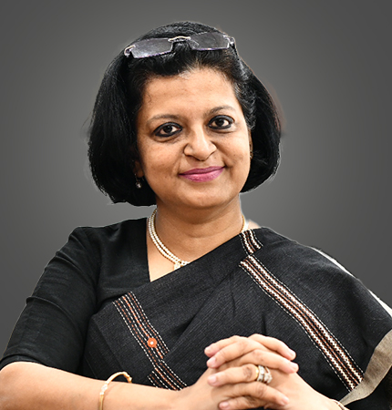 Atrayee Sanyal Vice President, Human Resource Management
- 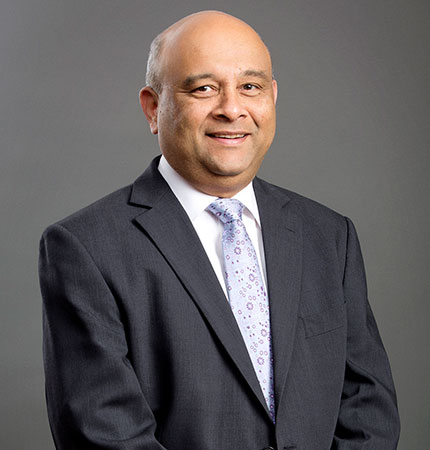 Avneesh Gupta Vice President, TQM and Engineering & Projects
- 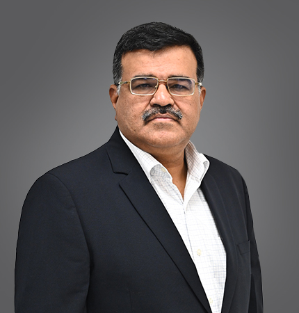 Chaitanya Bhanu Vice President, Steel Manufacturing
- 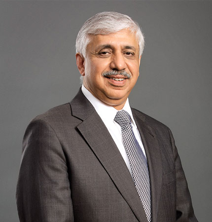 Chanakya Chaudhary Vice President, Corporate Services
- 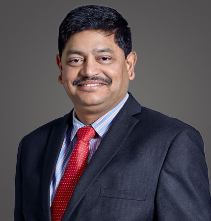 D B Sundara Ramam Vice President, Raw Material
- Dr Debashish Bhattacharjee Vice President, Technology & New Materials Business
- 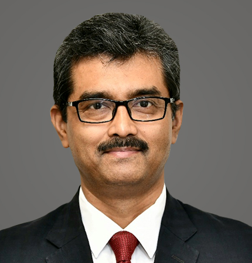 Probal Ghosh Vice President, Shared Services
- 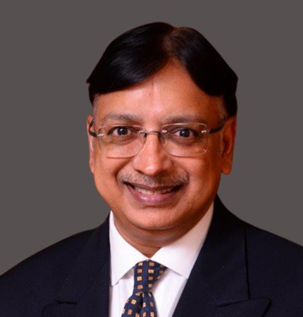 Peeyush Gupta Vice President, Supply Chain
- 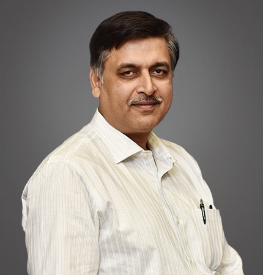 Rajiv Kumar Vice President, Operations – Tata Steel Kalinganagar
- 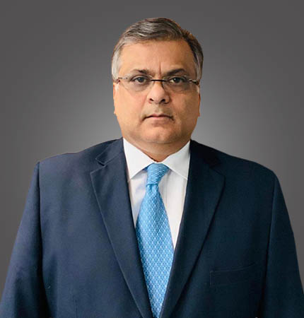 Rajiv Mukerji Vice President, Group Strategic Procurement
- 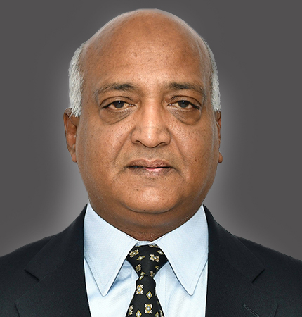 Rajeev Singhal Vice President, Steel Marketing & Sales (Flat Products)
-
 Sanjiv Paul
Vice President, Safety, Health & Sustainability
Sanjiv Paul
Vice President, Safety, Health & Sustainability
- 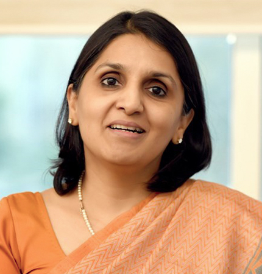 Samita Shah Vice President, Corporate Finance, Treasury & Risk Management
- 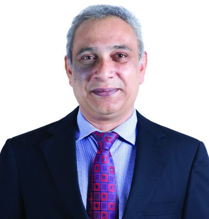 Sanjib Nanda Vice President, Financial Operations & Corporate Reporting
- 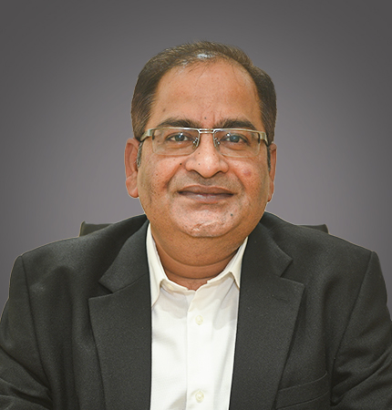 Subodh Pandey Vice President, Operations – Tata Steel Meramandali
- 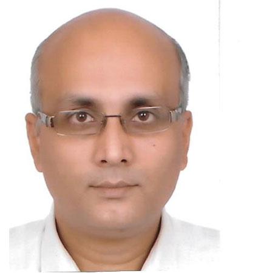 Uttam Singh Vice President, Iron Making